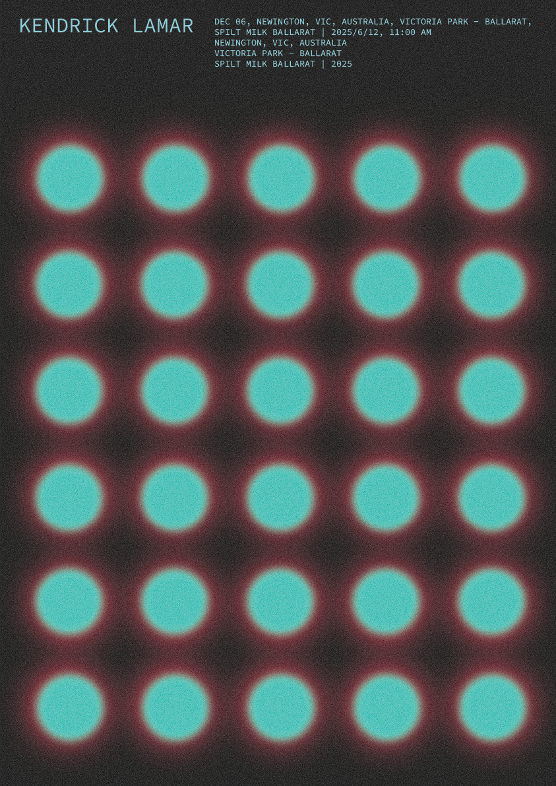
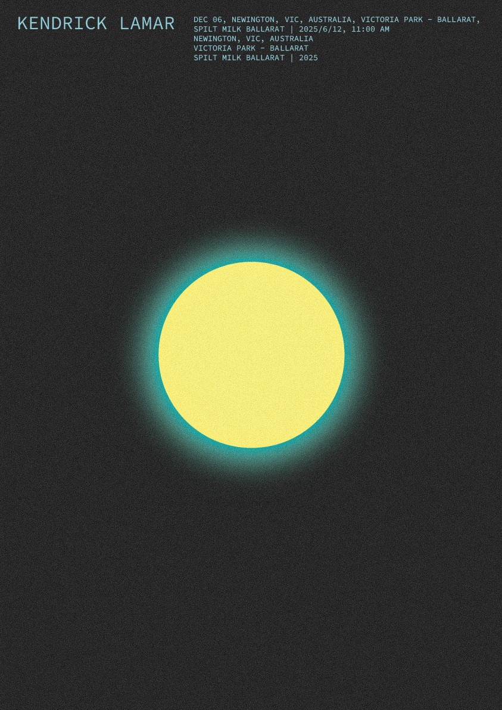
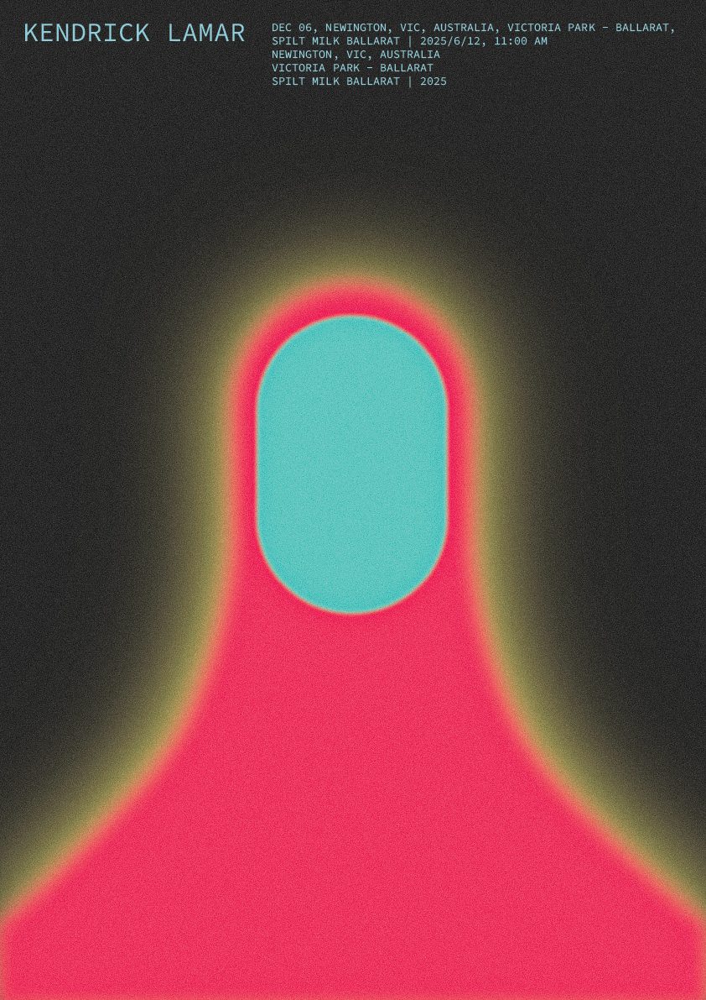
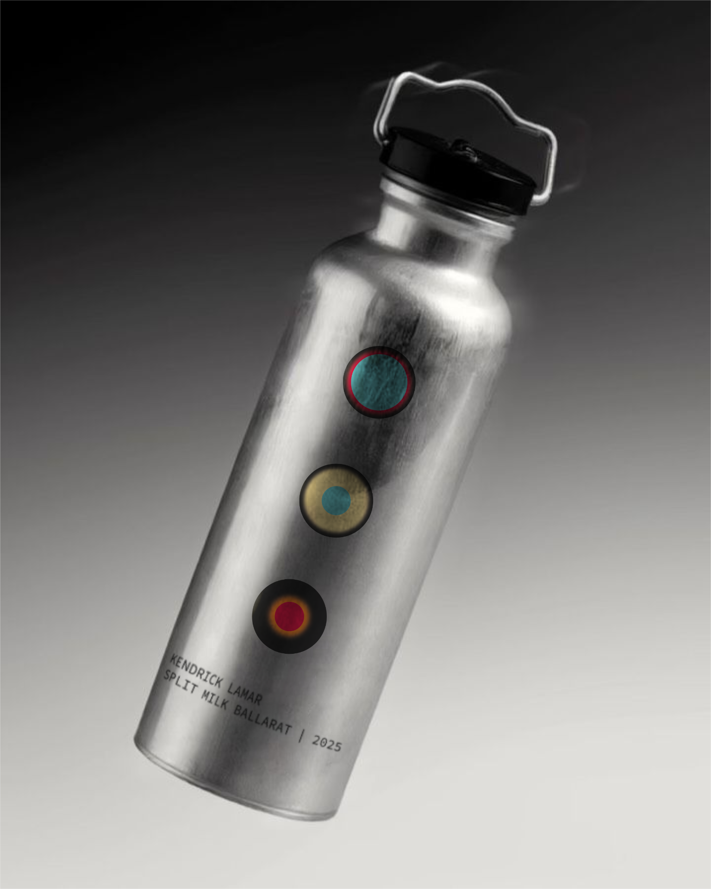
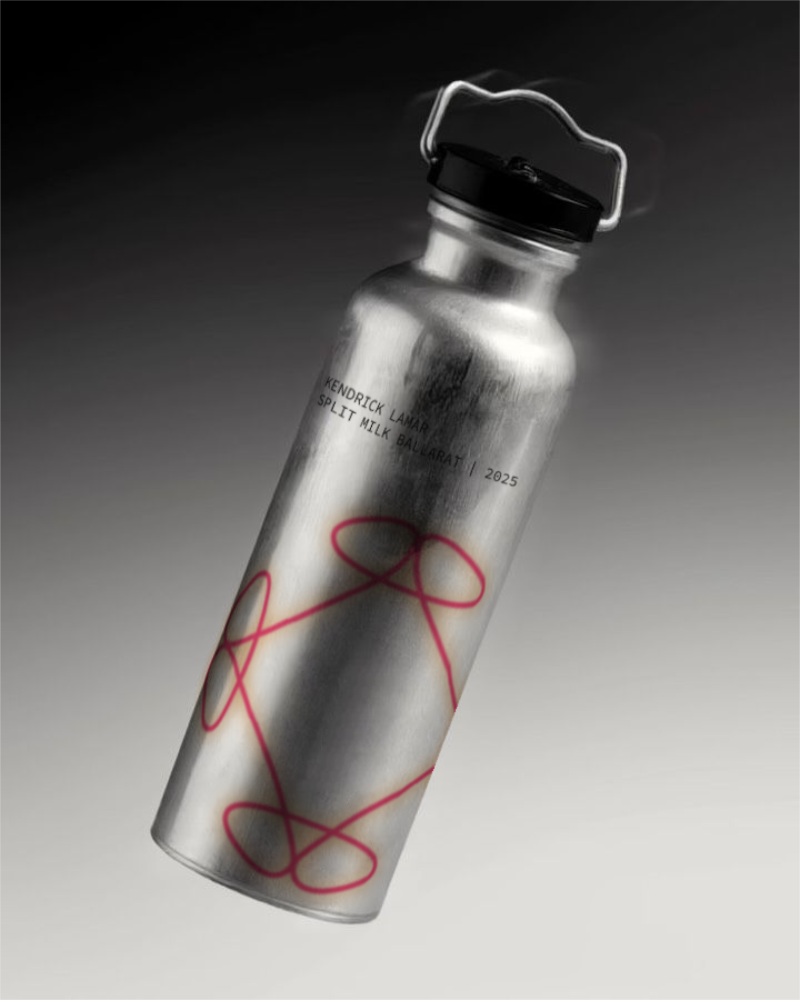
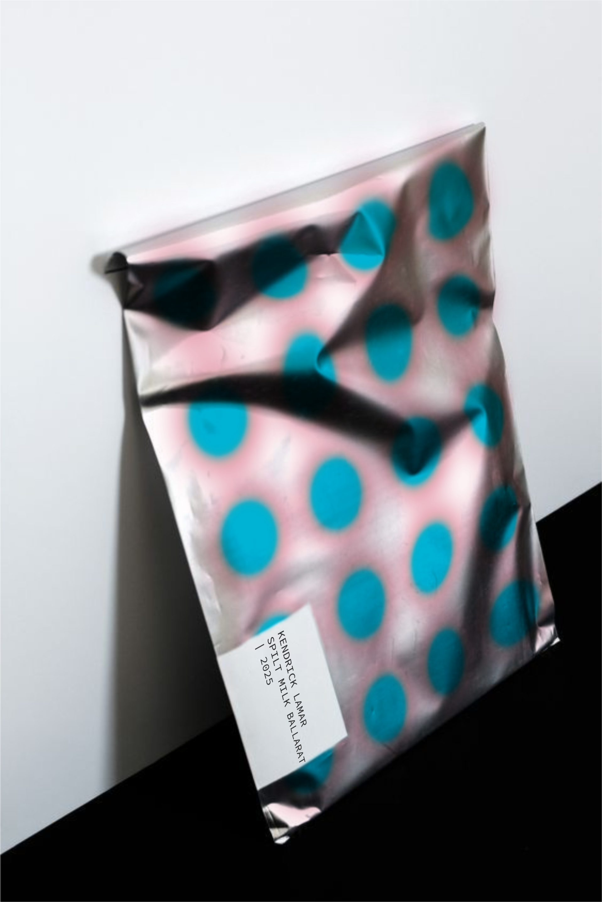
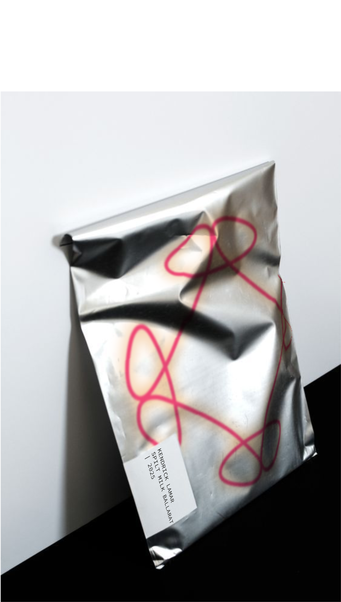
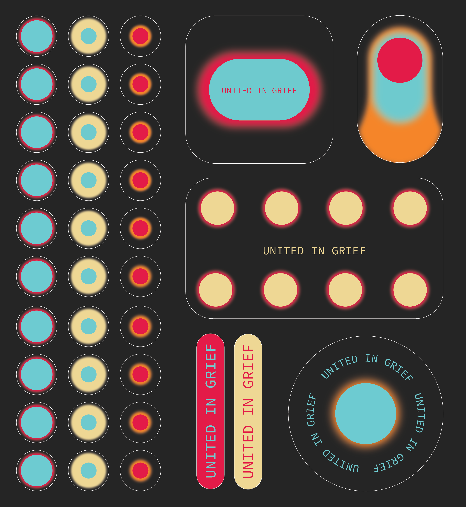
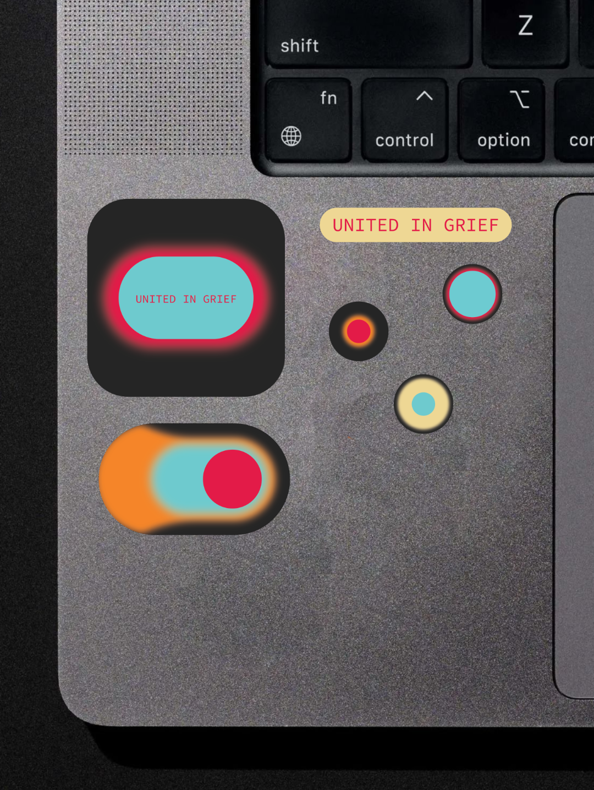
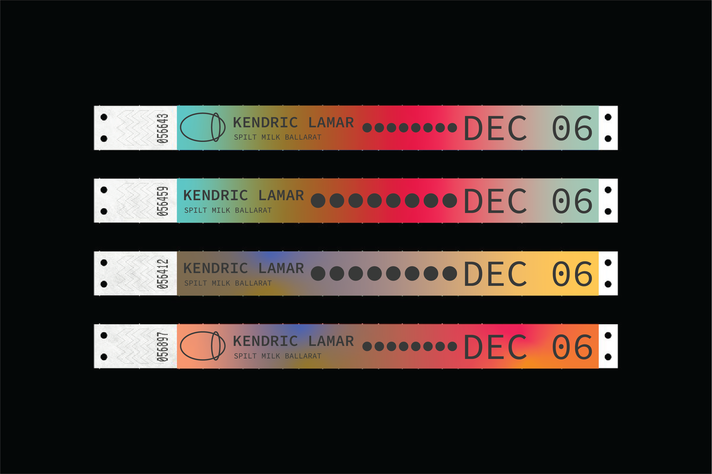

EXPERIMENTAL NOTATION
В рамках проекта я разработала айдентику для песни “United in Grief” Kendrick Lamar, основанную на идее визуализации звука через абстрактные формы. Главной задачей было передать настроение и динамику трека не через буквальные образы, а через цвет, движение и композицию.
Визуальная система проекта строится на сочетании градиентов, пластичных форм и ритмичных элементов, которые создают ощущение непрерывного звучания. В рамках айдентики также были разработаны анимация, постеры, анонсы для социальных сетей и мерч, объединённые единой визуальной концепцией.



С самого начала работы мне было важно построить визуальный язык проекта вокруг цвета и световых переходов, поскольку именно с ними у меня ассоциировалось звучание трека. В процессе разработки я исследовала взаимодействие абстрактных фигур, градиентов и движения, стараясь передать через них ритм и эмоциональное состояние музыки.
Постепенно отдельные элементы сложились в цельную айдентику, которая работает сразу в нескольких форматах: от цифровой анимации и социальных сетей до печатных носителей и мерча.
Инструменты:
Adobe After Effects
Adobe Illustrator
Adobe Photoshop






